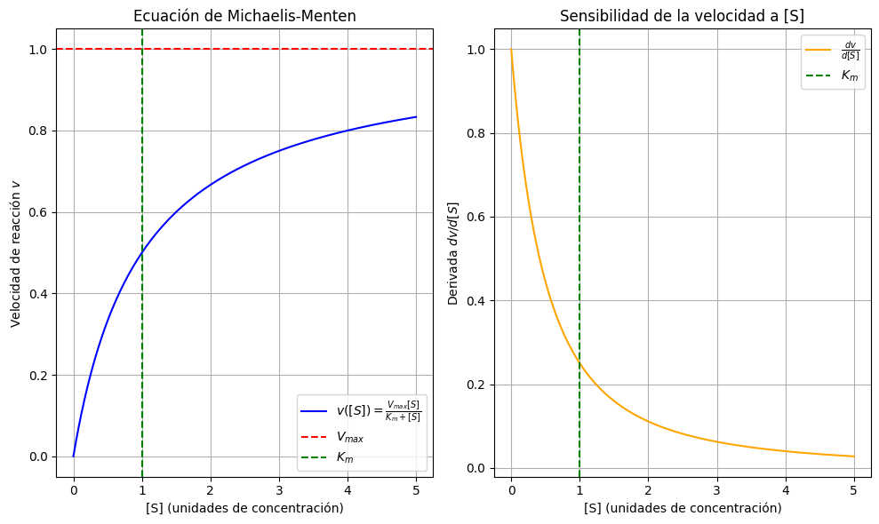
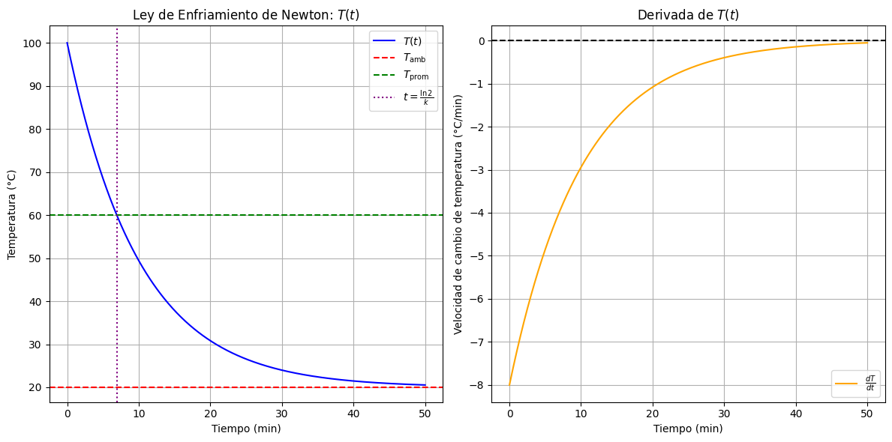

Casos Químicos#
ADVERTENCIA
Esto es una propuesta y todavía tiene que editarse
Ecuación de Michaelis-Menten#
Objetivo Calcular la derivada de la velocidad de reacción ( v ) con respecto a la concentración de sustrato ( [S] ) para la ecuación de Michaelis-Menten, e interpretar su significado en el contexto de la cinética enzimática.
La ecuación de Michaelis-Menten describe la velocidad ( v ) de una reacción catalizada por una enzima en función de la concentración de sustrato ( [S] ):
[ v([S]) = \frac{V_{\text{max}} [S]}{K_m + [S]} ]
Donde:
( V_{\text{max}} ): Velocidad máxima de la reacción.
( K_m ): Constante de Michaelis (concentración de sustrato a la cual ( v = V_{\text{max}} / 2 )).
Interpretación de ( \frac{dv}{d[S]} ):
Representa la sensibilidad de la velocidad de reacción ante cambios en ( [S] ).
En ( [S] = 0 ), ( \frac{dv}{d[S]} = \frac{V_{\text{max}}}{K_m} ).
En ( [S] \to \infty ), ( \frac{dv}{d[S]} \to 0 ).
Instruccion
Derivar la ecuación de Michaelis-Menten con respecto a ( [S] ) y simplificar el resultado.
Evaluar la derivada en:
( [S] = 0 )
( [S] = K_m )
( [S] \to \infty )
Interpretar físicamente cada resultado.
Graficar ( v([S]) ) y ( \frac{dv}{d[S]} ) en el rango ( [S] = [0, 5K_m] ).
Discutir:
¿En qué rango de ( [S] ) la velocidad es más sensible a cambios en la concentración de sustrato?
¿Qué implica que ( \frac{dv}{d[S]} ) sea máxima en ( [S] = 0 )?
Solución
1. Derivada de la Ecuación de Michaelis-Menten#
Usamos la regla del cociente para derivar ( v([S]) ):
[ v([S]) = \frac{V_{\text{max}} [S]}{K_m + [S]} ]
La derivada es:
[ \frac{dv}{d[S]} = \frac{V_{\text{max}} (K_m + [S]) - V_{\text{max}} [S] \cdot (1)}{(K_m + [S])^2} = \frac{V_{\text{max}} K_m}{(K_m + [S])^2} ]
Resultado: [ \boxed{\frac{dv}{d[S]} = \frac{V_{\text{max}} K_m}{(K_m + [S])^2}} ]
2. Evaluación de la Derivada en Puntos Clave#
Punto |
Expresión |
Resultado |
Interpretación |
|---|---|---|---|
( [S] = 0 ) |
( \frac{V_{\text{max}} K_m}{K_m^2} ) |
( \frac{V_{\text{max}}}{K_m} ) |
Pendiente inicial de la curva ( v ) vs. ( [S] ). Eficiencia catalítica a bajas ( [S] ). |
( [S] = K_m ) |
( \frac{V_{\text{max}} K_m}{4 K_m^2} ) |
( \frac{V_{\text{max}}}{4 K_m} ) |
Sensibilidad a ( [S] = K_m ) es un cuarto de la pendiente inicial. |
( [S] \to \infty ) |
( \lim_{[S] \to \infty} \frac{V_{\text{max}} K_m}{(K_m + [S])^2} ) |
( 0 ) |
La velocidad se satura y ya no depende de ( [S] ). |
import numpy as np
import matplotlib.pyplot as plt
# Parámetros
Vmax = 1.0
Km = 1.0
# Rango de [S]
S = np.linspace(0, 5 * Km, 500)
# Función de Michaelis-Menten y su derivada
v = Vmax * S / (Km + S)
dv_dS = Vmax * Km / (Km + S)**2
# Gráfica
plt.figure(figsize=(10, 6))
# v([S])
plt.subplot(1, 2, 1)
plt.plot(S, v, label="$v([S]) = \\frac{V_{max} [S]}{K_m + [S]}$", color="blue")
plt.xlabel("[S] (unidades de concentración)")
plt.ylabel("Velocidad de reacción $v$")
plt.title("Ecuación de Michaelis-Menten")
plt.axhline(Vmax, color="red", linestyle="--", label="$V_{max}$")
plt.axvline(Km, color="green", linestyle="--", label="$K_m$")
plt.legend()
plt.grid(True)
# dv/d[S]
plt.subplot(1, 2, 2)
plt.plot(S, dv_dS, label="$\\frac{dv}{d[S]}$", color="orange")
plt.xlabel("[S] (unidades de concentración)")
plt.ylabel("Derivada $dv/d[S]$")
plt.title("Sensibilidad de la velocidad a [S]")
plt.axvline(Km, color="green", linestyle="--", label="$K_m$")
plt.legend()
plt.grid(True)
plt.tight_layout()
plt.show()

Velocidad de Reacción#
from sympy import symbols, exp, diff
Definir variables#
A0, k, t = symbols(‘A0 k t’, positive=True) A = A0 * exp(-k * t)
Derivada#
dA_dt = diff(A, t) print(f»d[A]/dt = {dA_dt}»)
Evaluar en t=0 y t=1#
dA_dt_t0 = dA_dt.subs(t, 0) dA_dt_t1 = dA_dt.subs(t, 1) print(f»Velocidad en t=0: {dA_dt_t0}“) print(f»Velocidad en t=1: {dA_dt_t1}”)
Recta tangente en t=0#
tangent_line = A0 - k * A0 * t print(f»Recta tangente: {tangent_line}»)
Ley de Enfriamiento de Newton#
La Ley de Enfriamiento de Newton describe cómo la temperatura ( T(t) ) de un objeto cambia con el tiempo cuando está en contacto con un medio ambiente a temperatura constante ( T_{\text{amb}} ). La ecuación diferencial que modela este fenómeno es:
[ \frac{dT}{dt} = -k (T - T_{\text{amb}}) ]
Donde:
( T(t) ): Temperatura del objeto en el tiempo ( t ).
( T_{\text{amb}} ): Temperatura ambiente (constante).
( k ): Constante de enfriamiento (depende del material y condiciones del medio).
Solución analítica: [ T(t) = T_{\text{amb}} + (T_0 - T_{\text{amb}}) e^{-kt} ] Donde ( T_0 ) es la temperatura inicial del objeto en ( t = 0 ).
Instrucciones
Derivar la solución analítica de la Ley de Enfriamiento de Newton a partir de su ecuación diferencial.
Calcular la derivada ( \frac{dT}{dt} ) y analizar su comportamiento en función del tiempo.
Determinar el tiempo ( t ) en el que la temperatura del objeto es igual a la temperatura promedio entre ( T_0 ) y ( T_{\text{amb}} ).
Graficar ( T(t) ) y ( \frac{dT}{dt} ) en función del tiempo.
Interpretar físicamente los resultados, incluyendo:
¿Qué representa la constante ( k ) en términos físicos?
¿Cómo afecta el valor de ( k ) a la velocidad de enfriamiento?
¿Qué sugiere el signo de ( \frac{dT}{dt} ) sobre la dirección del flujo de calor?
Solución
Derivación de la Solución Analítica La ecuación diferencial de la Ley de Enfriamiento de Newton es: [ \frac{dT}{dt} = -k (T - T_{\text{amb}}) ]
Separar variables: [ \frac{dT}{T - T_{\text{amb}}} = -k , dt ]
Integrar ambos lados: [ \int \frac{1}{T - T_{\text{amb}}} , dT = -k \int dt ] [ \ln T - T_{\text{amb}}| = -kt + C ]
Exponenciar ambos lados: [ T - T_{\text{amb}} = e^{-kt + C} = e^C e^{-kt} ] Usando la condición inicial ( T(0) = T_0 ), obtenemos ( e^C = T_0 - T_{\text{amb}} ): [ T(t) = T_{\text{amb}} + (T_0 - T_{\text{amb}}) e^{-kt} ]
Resultado: [ \boxed{T(t) = T_{\text{amb}} + (T_0 - T_{\text{amb}}) e^{-kt}} ]
Derivada de ( T(t) ) con Respecto al Tiempo Derivamos la solución analítica: [ \frac{dT}{dt} = \frac{d}{dt} \left[ T_{\text{amb}} + (T_0 - T_{\text{amb}}) e^{-kt} \right] = -k (T_0 - T_{\text{amb}}) e^{-kt} ]
Resultado: [ \boxed{\frac{dT}{dt} = -k (T_0 - T_{\text{amb}}) e^{-kt}} ]
Interpretación:
La derivada ( \frac{dT}{dt} ) es negativa si ( T_0 > T_{\text{amb}} ) (el objeto se enfría).
La magnitud de ( \frac{dT}{dt} ) disminuye exponencialmente con el tiempo.
Tiempo en el que ( T(t) ) es Igual a la Temperatura Promedio
La temperatura promedio entre ( T_0 ) y ( T_{\text{amb}} ) es: [ T_{\text{prom}} = \frac{T_0 + T_{\text{amb}}}{2} ]
Igualamos ( T(t) = T_{\text{prom}} ): [ T_{\text{amb}} + (T_0 - T_{\text{amb}}) e^{-kt} = \frac{T_0 + T_{\text{amb}}}{2} ]
Solución:
Restar ( T_{\text{amb}} ) a ambos lados: [ (T_0 - T_{\text{amb}}) e^{-kt} = \frac{T_0 - T_{\text{amb}}}{2} ]
Dividir entre ( T_0 - T_{\text{amb}} ): [ e^{-kt} = \frac{1}{2} ]
Aplicar logaritmo natural: [ -kt = \ln \left( \frac{1}{2} \right) = -\ln 2 \implies t = \frac{\ln 2}{k} ]
Resultado: [ \boxed{t = \frac{\ln 2}{k}} ]
Interpretación:
Este tiempo es independiente de ( T_0 ) y ( T_{\text{amb}} ) y solo depende de ( k ).
Es el tiempo en el que el objeto ha reducido su diferencia de temperatura con el ambiente a la mitad.
import numpy as np
import matplotlib.pyplot as plt
# Parámetros
T0 = 100.0 # Temperatura inicial del objeto (°C)
T_amb = 20.0 # Temperatura ambiente (°C)
k = 0.1 # Constante de enfriamiento (min^-1)
# Tiempo
t = np.linspace(0, 50, 500) # Rango de tiempo (min)
# Temperatura T(t)
T = T_amb + (T0 - T_amb) * np.exp(-k * t)
# Derivada dT/dt
dT_dt = -k * (T0 - T_amb) * np.exp(-k * t)
# Temperatura promedio
T_prom = (T0 + T_amb) / 2
# Tiempo en el que T(t) = T_prom
t_prom = np.log(2) / k
# Gráfica
plt.figure(figsize=(12, 6))
# Gráfica de T(t)
plt.subplot(1, 2, 1)
plt.plot(t, T, label="$T(t)$", color="blue")
plt.axhline(T_amb, color="red", linestyle="--", label="$T_{\\text{amb}}$")
plt.axhline(T_prom, color="green", linestyle="--", label="$T_{\\text{prom}}$")
plt.axvline(t_prom, color="purple", linestyle=":", label="$t = \\frac{\\ln 2}{k}$")
plt.xlabel("Tiempo (min)")
plt.ylabel("Temperatura (°C)")
plt.title("Ley de Enfriamiento de Newton: $T(t)$")
plt.legend()
plt.grid(True)
# Gráfica de dT/dt
plt.subplot(1, 2, 2)
plt.plot(t, dT_dt, label="$\\frac{dT}{dt}$", color="orange")
plt.axhline(0, color="black", linestyle="--")
plt.xlabel("Tiempo (min)")
plt.ylabel("Velocidad de cambio de temperatura (°C/min)")
plt.title("Derivada de $T(t)$")
plt.legend()
plt.grid(True)
plt.tight_layout()
plt.show()

Decaimiento Radiactivo#
📚 Contexto Teórico#
El decaimiento radiactivo describe cómo la cantidad de un isótopo radiactivo disminuye con el tiempo debido a la emisión de partículas o radiación. La ecuación diferencial que modela este fenómeno es:
[ \frac{dN}{dt} = -\lambda N ]
Donde:
( N(t) ): Número de núcleos radiactivos en el tiempo ( t ).
( \lambda ): Constante de decaimiento (probabilidad de decaimiento por unidad de tiempo).
Solución analítica: [ N(t) = N_0 e^{-\lambda t} ] Donde ( N_0 ) es el número inicial de núcleos radiactivos en ( t = 0 ).
Tiempo de vida media (( t_{1/2} )): [ t_{1/2} = \frac{\ln 2}{\lambda} ]
💡 Enunciado#
Título: Análisis del Decaimiento Radiactivo usando Derivadas
Objetivos:
Derivar la solución analítica de la ecuación de decaimiento radiactivo a partir de su ecuación diferencial.
Calcular la derivada ( \frac{dN}{dt} ) y analizar su comportamiento en función del tiempo.
Determinar el tiempo ( t ) en el que la velocidad de decaimiento ( \left \frac{dN}{dt} \right| ) es máxima y mínima.
Calcular la actividad radiactiva ( A(t) = \lambda N(t) ) y su derivada ( \frac{dA}{dt} ).
Graficar ( N(t) ), ( \frac{dN}{dt} ), y ( A(t) ) en función del tiempo.
Interpretar físicamente los resultados, incluyendo:
¿Qué representa la constante ( \lambda ) en términos físicos?
¿Cómo afecta el valor de ( \lambda ) a la velocidad de decaimiento?
¿Qué sugiere el signo de ( \frac{dN}{dt} ) sobre el proceso de decaimiento?
📝 Solución#
1. Derivación de la Solución Analítica#
La ecuación diferencial del decaimiento radiactivo es: [ \frac{dN}{dt} = -\lambda N ]
Solución:
Separar variables: [ \frac{dN}{N} = -\lambda , dt ]
Integrar ambos lados: [ \int \frac{1}{N} , dN = -\lambda \int dt ] [ \ln|N| = -\lambda t + C ]
Exponenciar ambos lados: [ N = e^{-\lambda t + C} = e^C e^{-\lambda t} ] Usando la condición inicial ( N(0) = N_0 ), obtenemos ( e^C = N_0 ): [ N(t) = N_0 e^{-\lambda t} ]
Resultado: [ \boxed{N(t) = N_0 e^{-\lambda t}} ]
2. Derivada de ( N(t) ) con Respecto al Tiempo#
Derivamos la solución analítica: [ \frac{dN}{dt} = \frac{d}{dt} \left[ N_0 e^{-\lambda t} \right] = -\lambda N_0 e^{-\lambda t} ]
Resultado: [ \boxed{\frac{dN}{dt} = -\lambda N_0 e^{-\lambda t}} ]
Interpretación:
La derivada ( \frac{dN}{dt} ) es negativa para todo ( t ), lo que indica que ( N ) siempre disminuye con el tiempo.
La velocidad de decaimiento ( \left| \frac{dN}{dt} \right| = \lambda N_0 e^{-\lambda t} ) es máxima en ( t = 0 ) y disminuye exponencialmente con el tiempo.
3. Tiempo en el que la Velocidad de Decaimiento es Máxima y Mínima#
Máxima velocidad de decaimiento: [ \left| \frac{dN}{dt} \right|_{t=0} = \lambda N_0 ]
Mínima velocidad de decaimiento: [ \lim_{t \to \infty} \left| \frac{dN}{dt} \right| = 0 ]
Interpretación:
Al inicio (( t = 0 )), la velocidad de decaimiento es máxima porque hay más núcleos radiactivos disponibles para decaer.
Con el tiempo, la velocidad de decaimiento disminuye porque hay menos núcleos radiactivos.
4. Actividad Radiactiva y su Derivada#
La actividad radiactiva ( A(t) ) se define como el número de decaimientos por unidad de tiempo: [ A(t) = \lambda N(t) = \lambda N_0 e^{-\lambda t} ]
Derivada de ( A(t) ): [ \frac{dA}{dt} = \frac{d}{dt} \left[ \lambda N_0 e^{-\lambda t} \right] = -\lambda^2 N_0 e^{-\lambda t} ]
Resultado: [ \boxed{A(t) = \lambda N_0 e^{-\lambda t}} ] [ \boxed{\frac{dA}{dt} = -\lambda^2 N_0 e^{-\lambda t}} ]
Interpretación:
La actividad radiactiva ( A(t) ) disminuye exponencialmente con el tiempo.
La derivada ( \frac{dA}{dt} ) es negativa, lo que indica que la actividad disminuye con el tiempo.
import numpy as np import matplotlib.pyplot as plt
Parámetros#
N0 = 1000.0 # Número inicial de núcleos radiactivos lambda_decay = 0.1 # Constante de decaimiento (min^-1)
Tiempo#
t = np.linspace(0, 50, 500) # Rango de tiempo (min)
Número de núcleos N(t)#
N = N0 * np.exp(-lambda_decay * t)
Derivada dN/dt#
dN_dt = -lambda_decay * N0 * np.exp(-lambda_decay * t)
Actividad radiactiva A(t)#
A = lambda_decay * N
Tiempo de vida media#
t_half = np.log(2) / lambda_decay
Gráfica#
plt.figure(figsize=(15, 5))
Gráfica de N(t)#
plt.subplot(1, 3, 1) plt.plot(t, N, label=“\(N(t) = N_0 e^{-\\lambda t}\)”, color=“blue”) plt.axhline(N0, color=“red”, linestyle=“–”, label=“\(N_0\)”) plt.axvline(t_half, color=“green”, linestyle=“–”, label=“\(t_{1/2}\)”) plt.xlabel(“Tiempo (min)”) plt.ylabel(“Número de núcleos \(N(t)\)”) plt.title(“Decaimiento Radiactivo: \(N(t)\)”) plt.legend() plt.grid(True)
Gráfica de dN/dt#
plt.subplot(1, 3, 2) plt.plot(t, dN_dt, label=“\(\\frac{dN}{dt}\)”, color=“orange”) plt.axhline(0, color=“black”, linestyle=“–”) plt.xlabel(“Tiempo (min)”) plt.ylabel(“Velocidad de decaimiento \(dN/dt\)”) plt.title(“Derivada de \(N(t)\)”) plt.legend() plt.grid(True)
Gráfica de A(t)#
plt.subplot(1, 3, 3) plt.plot(t, A, label=“\(A(t) = \\lambda N(t)\)”, color=“green”) plt.axhline(0, color=“black”, linestyle=“–”) plt.xlabel(“Tiempo (min)”) plt.ylabel(“Actividad radiactiva \(A(t)\)”) plt.title(“Actividad Radiactiva”) plt.legend() plt.grid(True)
plt.tight_layout() plt.show()